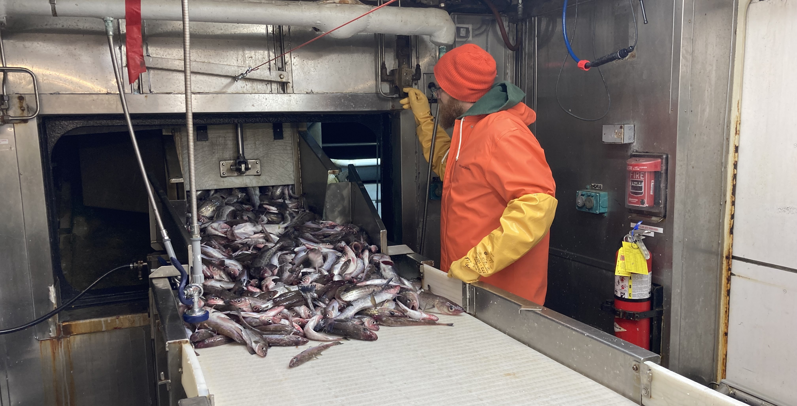
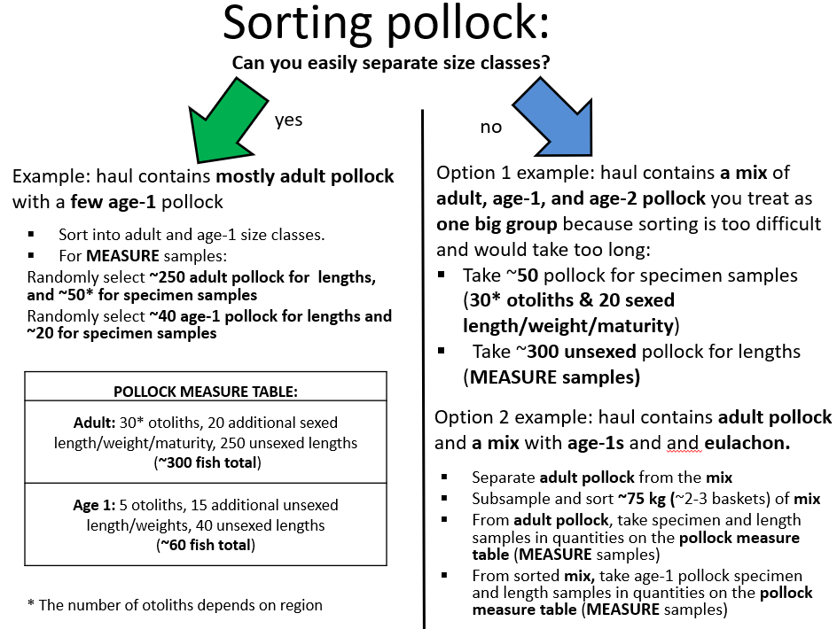
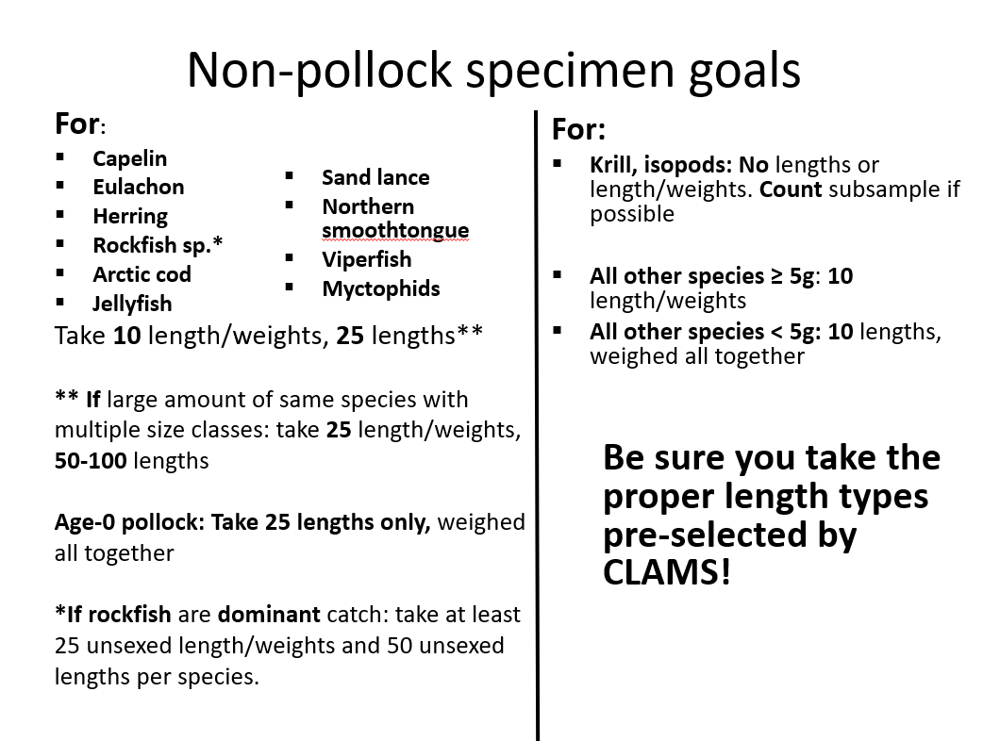
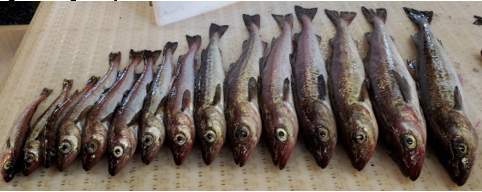
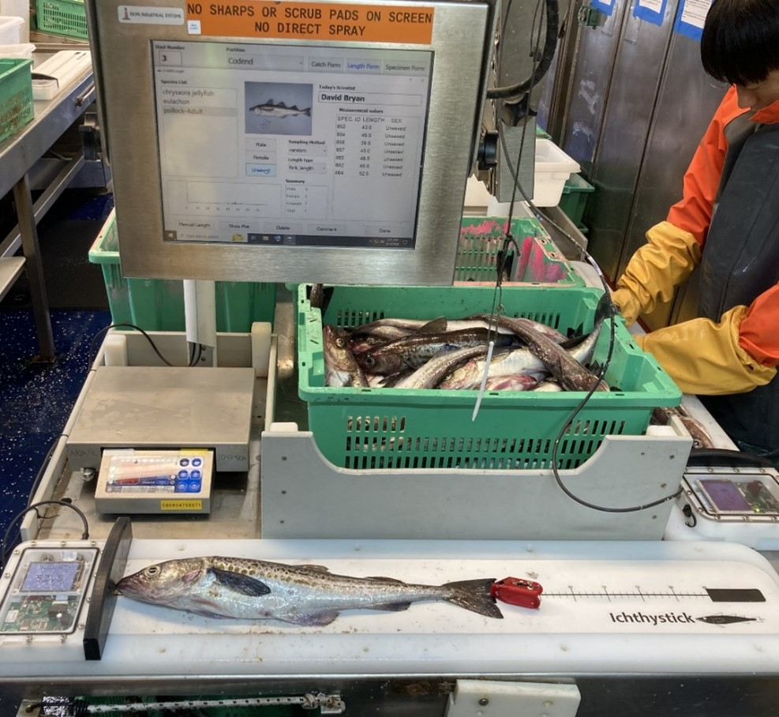
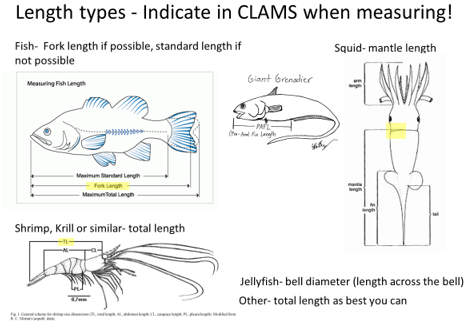
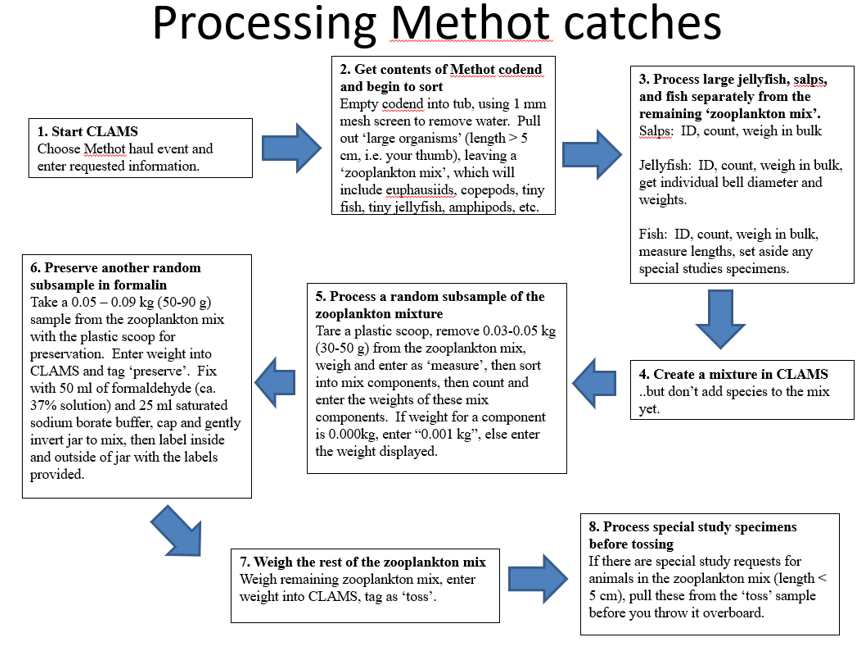
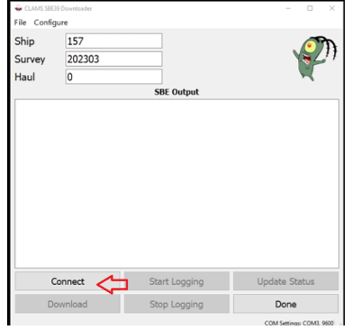
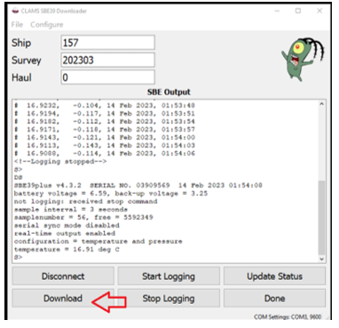

Sampling Procedures
This section of the manual provides instruction on what to when a midwater or bottom trawl catch first comes onboard, how to sort the catch on the slime line, and how to collect biological samples. There is also a section on how to handle Methot trawls.
Saftey and Ergonomics
Prior to beginning sampling, take time to consider physical saftey and ergonomics. There are several steps that can be taken.
- Consider some pre sampling stretches to warm up muscles (link to GAP stretches).
- The fish lab is wet and slippery, make sure that the non-slip floor mats are placed at all workstations.
- Remember to limit basket weights to 20 kg to prevent injuries and practice safe lifting techniques.
- use two people to move heavy objects like the camtrawl or large totes of fish from the deck.
Midwater or Bottom Trawl catches
1. Recording the catch in CLAMS
Open the Catch Logger for Acoustic Midwater Surveys (CLAMS) app; See the document CLAM Digging located in the folder G:\CLAMS for entering catch data on the CLAMS app.
The CLAM digging document in G is from 2013. Is there some updated instructions somewhere that we can reference? Any quick bullets we could add here?
2. Equipment Retrieval
As the net is hauled back, obtain the SBE from the deck crew and download it as soon as possible. The SBE downloader app is located on the forward computer nearest the sink.
Rinse the CamTrawl with fresh water and if time allows download the images before the next deployment.
It is common for other equipment to be handed over to the slime lab from the deck crew; various integrated trawl instrumentation (ITI) and special study instrumentation (light sensors, etc.).
3. Splitter Bin Versus Sorting Table
Catches with a total catch weight of less than ~ 2,000 kg (2 tons) can be dumped directly into the sorting table (link to that section) However, for larger catches (>2,000 kg) they must first go into a deck “splitter” bin and are “split” for a subsample.

4. Splitter Bin
For split catches, a total catch weight must be obtained by weighing the catch in the codend. The load cell(provide link to instructions) or the crane scale may be used. Each (?) crane has an internal scale that has a readout both at the crane and in the fish lab. However the crane scales and/or the readout in the fish lab is not always reliable. A weight from the load cell is preferred.
Once the load cell is secure and hanging from the crane hook press TARE and you are ready to weigh the codend.
After the codend is weighed and recorded the catch is dumped into the deck “splitter” bin.
Next the the weight of the empty codend should be recorded.
A cargo (brailer) net attached to a metal frame in the bottom of the splitter bin is used to collect a subsample of the catch. This subsample is then lifted into the sorting table.
Once the crane is secure, wear PPE and receive deck permission to check the sorting table and splitter bin to make sure the catch is representative/homogenous.
The total catch weight is the difference of the full codend and the weight of the empty codend. The load cell can output in either pounds or kilograms. Make sure the load cell reads in kilograms, otherwise select the pounds unit in CLAMS.
Splitter Tips
If getting weights from the load cell on deck, checking the splitter bin, or checking the sorting table make sure you are wearing PPE (helmet + floatation, either a float coat or life jacket)! Also make sure the deck crew know you are out there.
Deleted a note about using Whole Haul here. I think the practice of doing that is discouraged. Maybe want to double check that whole haul sampling for a single species is described somewhere, for example in case of a shark.
If the total catch exceeds the capacity of the deck “splitter” bin and the catch is not homogenous, splits should be repeated (with subsequent emptying of the bin) until the entire codend is empty. Alternately, the end of the codend has been pinched off at the thick strap and placed into the sorting table and the rest of the catch dumped overboard. This is not ideal but has happened due to excessive catch, poor weather conditions, and inexperienced crew preventing safe splitter bin operations.
Slime Line
The catch from the sorting table flows directly onto the ‘slime line’ though a hydraulic door.

Roles
At least three people are desirable for the slime line. One person (often the Fish Lab Lead) operates the belt system and also weighs and enters the catch data into CLAMS. It is essential for this person to be following the “Table Tips” for species collection intended for length frequency measurements, biological sampling, and Special Studies for the current survey. Table Tips are updated for each winter and summer survey, particularly biological collections and Special Studies. The second person operates the hydraulic sorting table door using the lever on the inboard side of the sorting belt (see image above) and allows the catch to steadily and slowly flow from the sorting table to the sorting belt so the catch can be efficiently screened and sorted by the slime line team. The third person will also sort species from the belt as directed by the Fish Lab Lead and often stands on the outboard side of the sorting belt. If there is low bycatch and the catch requires minimal sorting, only 2 people are necessary to run the slime line. In this case, the third person may get a jump start on measuring the lengths of the target species set aside by the Fish Lab Lead. If bycatch composes a significant portion of the catch, the third person helps sort out items from the catch to be weighed and measured after the table has been emptied.
Operations
Once the deck area around the sorting table is clear of deck operations and the ok is given from the deck lead, the sorting table can be raised. Clearly shout out to the deck “Table coming up!” so they are aware and the person on the outboard side of the sorting belt can raise the table using the hydraulic lever. The catch is steadily and slowly dumped onto the sorting belt by raising and lowering the table door to maintain a single layer of fish on the table that can be sorted through. The catch is sorted by species and weighed.
Once some of the catch has been allowed to flow onto the sorting belt, pause and make a sampling strategy! Reference common sampling strategies (i.e. the ‘sorting pollock’ table tips slide) and consider suggestions from team members; they may have an alternative, more efficient sorting strategy. Once a strategy has been chosen confirm it with the fish lab team so everyone is on the same page working together.
Remember to avoid “picking” species or pollock of a particularly large or small size class from the belt unless you pick ALL individuals of that species/size or subclass of that species.
When hauls are composed almost entirely of one species, the bycatch can be sorted off the sorting belt while the dominant species is left on the belt to be load into baskets and weighed. For example, all non dominant species are placed into a bin to be sorted after the belt is cleared.
Occasionally there are 2 predominant species in the catch such as pollock and jellyfish, pollock and POP, or even pollock and a Mix. It is more ergonomic to leave both species on the belt and sort the 2 predominant species by sliding/tossing one species forward while leaving the other behind. This creates an alternating flow of two species moving towards the scale. The person at the scale weighing the catch will then need to switch between the two species in CLAMS while recording weights.
When weighing baskets of selected species at the end of the sorting belt be mindful of the weight of the baskets. Repetitive heavy lifting of full baskets is discouraged at sea and may result in “repetitive stress/strain injuries.” Consider maintaining a maximum basket weight of ~20kg. It is encouraged to set aside more baskets that are lighter to make the lifting easier and safer for the fish lab team.
A reminder that everything in the catch gets weighed, then it is designated as being Measured, Counted or Tossed. Baskets that are retained for length/sex or biological sampling are designated “Measure”. Baskets that are weighed and “Tossed” are tossed over through the discard shoot. Baskets of target species are generally not “Counted”, this is typically reserved for catch species that we do not length (amphipods) or abundant larval fish such as Age-0 pollock. “Count” baskets may be discarded after the counted amount has been entered into CLAMS.
Digital species ID guides for Fishes and Invertebrates can be accessed by clicking on the links. A suite of hard copies of ID guide books can also be found in the Chem Lab.
Subsample selection
Since weighing and measuring all individuals that have been sorted on the belt is not typically feasible (except for small hauls), a subsample of predominate species or species mixes is made. Subsamples can be taken from the targeted catch (often pollock or POP) and from the bycatch (everything else; often forage fishes). When the catch is subsampled, it must be random and representative of the whole catch.
When taking a subsample, a proportion is weighed and “Measured” while the remainder is weighed and “Tossed”. The weights and numbers from the measured subsample are extrapolated in the database to represent the total weight and number of that species in the catch. The fish marked as Measured are also referred to as the biological sample.
If alternative instructions are directed, (e.g., Special Studies) an additional option is weighed and “Counted” (sometimes larval fish, Age-0 and Age-1 pollock).
The size of the Measured biological sample depends on the species or the species mixture. Refer to the Table Tips posted on the wall for guidance. Instead of counting individual specimens for the biological sample, weight can be used. For example, if Table Tips recommends 300 adult pollock for biological sample, and you you count 30 pollock in a basket weighing 20kg, instead of counting 300 pollock you could mark 10 baskets as “Measure” and “Toss” the remainder. After the appropriate number of baskets for the biological sample have been weighed, recorded, and set aside for processing, all fish in excess of the selected biological sample may be weighted and selected as “Toss” and discarded overboard.
Biological Sample
The subsample marked as “Measure” constitutes the biological sample. The biological sample is subdivided into either Specimens that include any fish that needs to be cut open and Length/Weights that include any organism in which only a length and weight is needed. Specimens include pollock theat need to have otoliths taken, pollock and any other fish that need to have sex and/or maturity status recorded, and special study species. When both Specimens and Length/Weights are required they should be randomly selected from the biological sample. This can be done by randomly selecting the appropriate number of baskets of fish for each collection or alternatively, during a random basket collection, select the number of fish required for the Specimens sample by using a zigzag pattern; on the sorting belt, the zigzag method involves collecting all fish in a left to right or right to left zigzag pattern until the required number of fish has been reached. Separately, on a different random basket collection repeat the zigzag method for the Length/Weight sample.
Target Species Measure Subsample

Always take an equal portion for the Measure subsample from the first, middle and last section of the catch by attempting an adaptable systematic random design, collecting every X basket. To help create the random design visually inspect the fullness and species composition of the sorting table before processing the catch. For example, when the fish table is half to three fourths full of predominantly average sized Adult Pollock, collecting every sixth basket is a great place to start. Keep in mind, random sampling is an adaptable practice; therefore, if more or less fish are needed, you may increase or decrease the collection frequency of baskets to obtain the ideal sample size. If less fish are needed, consider the option of reducing the basket fullness to reduce fish and maintain the sample design.
When estimating the number of baskets/target species to set aside it is a general practice to count the target species in the first basket and reflect upon that total with the posted amounts on the Table Tips. For example, if 30 fish are counted in the first basket and the Table Tips requests 30 pollock for otoliths, 20 for sexed length/weight/maturity and 250 for length only, set aside roughly ~ 1 basket for otoliths, 1 basket for sexed length/weight/maturity, and 9 baskets, for lengths. If using a basket, as subsampling tool all the fish most be measured within that basket. If there way more than needed, dump the fish out and collect a random sample from those for your measurement.
Non pollock Sampling

Check the Table Tips to determine what quantity of a species should be retained for lengths, lengths/weights or special studies. Similar to pollock, non-pollock catch can be divided into fish that are weighed and kept for measurements and those that are weighed and then tossed. When not retaining the entirety of a bycatch species for “measurements” then take an equal portion for the measurement subsample from the first, middle and last section of the sorting table. For smaller species, like forage fish, the entirety of it can be collected in a few baskets then subsampled at the end. A simple practice to reduce to the desired amount is the “basket dump” technique. From the 2025 Observer Sampling Manual pg 13-5:
“The basket dump method works well on most vessels and in most fisheries as a method to randomly reduce a population. Once you have randomly selected a basket of unsorted catch from your species composition sample, split your selected basket by dumping it into two empty containers lined up next to each other. Assign numbers to the two empty baskets before dumping. After dumping the basket, randomly select one of these two containers and use all the predominant species in the randomly selected basket for your sex/length and specimen fish.”
Repeat the basket dump method until reaching the desired sample size.
Mixes and Submixes
Eulachon, juvenile pollock, and other forage fish are often caught together in Shelikof Strait. When a catch of multiple similar species cannot be separated to species in a reasonable amount of time at the sorting belt, create a “Mix” by selecting the species as “Mix”. The mix category can be created to encompass all of these individuals. In these cases, a portion of the mix needs to be further sorted, weighed and for species composition and measurements of the Mix. The rest of mix can be weighed and Tossed. Similar to collecting a subsample to Measure as described above, collect an equal portion of the “Mix” from the first, middle and last section to sort, weigh and measure. Unlike the subsample, we save a couple baskets to the side until the entire haul has been processed from the sorting table. The saved “Mix” basket(s) intended for species composition representation should be weighed and selected as a Measure. Similar to a subsample, the weights and numbers of the species composition of the “Mix” will be extrapolated in the database to represent the total weight and number for all of those species in the catch. See the Table Tips example below “Handling mixes”, this will also be posted in the fish lab. Sort the mix from the representative basket(s) by species, and weigh the separated species and remember that the parent sample is now the “Mix” and not the “Sorting Table.” The remaining “Mix” baskets from the sorting table should also be weighted and “Tossed.”


Biological Sampling
Length Frequency

Length frequency data for each haul is collected at the species specific amounts identified in the Table Tips. Length frequency samples must be randomly selected. In general, lengths are collected from approximately 300 pollock per haul; 250 of those are lengths only as described here, and 50 more come from Specimen samples that include the otolith collection and additional length/weight/sex/maturity collections. Length frequency are typically collected from 35 (10 length/weights) non-target species (see “Subsample selection” section or Table Tips for target species divided into different size classes and length frequency goals).
 The Ichthysticks, also known as length boards, are used to magnetically measure the length of specimens into CLAMS. See posted Table Tips for examples of length types and species. For fish, place the tip of the snout at 0 (against the vertical panel at the left end of the measuring board) and position the pointed end of the stylus at the tip of the middle rays of the caudal fin (fork length). CLAMS will ask for specific lengths for each species. Keep the basket as the sampling unit (i.e., if you start sampling a basket, finish the basket) and avoid incidental hand selection biases.

All length boards are calibrated prior to entering the field (i.e. during Gear Trials). If measured lengths on the length board are significantly off from the length board ruler by more than a few millimeters they may need to be recalibrated. Contact MACE IT (i.e. Rick Towler, Scott Furnish, etc) and inform the Fish Lab Lead to monitor the length board for the possibility of future glitches; it is possible the length board will have to be switched for a spare. Please note the calibration process is conducted with a standard meter stick and not the ruler on the length board. Often the quickest fix to a frazzled length board is resetting the length board. The simplest reset option is completed by closing CLAMS and reopening the application.
When cleaning the wet lab do not spray high pressure water on the clear control board area of the length boards, that can introduce water into the system and ruin the boards!
Specimen Samples: Otoliths, Sex, Maturity, length/Weight, Gonad Weight, and Special Studies Sampling
In addition to unsexed length measurements described above, Specimen samples including the collection of otoliths, sex, maturity, specimen weight, and gonad weight is another slime team collaboration that involves a minimum of 2 people. Depending on staffing, it may be preferable to complete measuring the lengths of all the target species and non-target species before proceeding to this data collection. The collection of length, weight, sex, maturity, and gonad weight is referred to as the GSI (gonadosomatic index) protocol.The collection of otoliths as the otolith protocol.
The GSI protocol can be completed efficiently by 1 person that has experience with target species (pollock) maturities.
Three people working collaboratively on the otolith protocol and special studies enables a more efficient processing times.
Alternatively, a Fish Lab Lead may prefer one person completes all the length measurements while two others start work on the GSI and /or the otolith protocols.
A reminder; both pollock specimen protocols in CLAMS collect GSI data, however only one protocol is capable of collecting otolith data, and is required to collect otoliths under that CLAMS protocol.
Should we include a description on what a “protocol” is?
From the “Measure” baskets randomly placed aside for Specimens (i.e. otoliths and GSI) collect the following data in CLAMS under the Specimen tab: a. fork length b. specimen weight c. sex and maturity stage (refer to Maturity stages posted in fish lab) d. weight of all prespawning ovaries (stage 3) - If collecting ovaries, weigh the liver. e. otoliths f. any applicable Special Studies collection
Otoliths
It is the responsibility of the recorder and the vial scanner to make sure the otoliths are being placed in the correct vial. Throughout the collection process, the vial numbers are always scanned in an increasing numerical order, not out of order. After each row, always spot check the vial number correlates to the specimen number on CLAMS. If there are any discrepancies, discard the otoliths in question and erase the data. he data can be re-entered under the GSI protocol if otoliths are lost in the process.
During the otolith collection for a haul, use the squeeze bottle to fill vials just enough to cover otoliths with glycerol thymol. Vials should be tightly capped and re-checked for “extra” otoliths. Assure that each Styrofoam container is labeled with cruise number, specimen number range, and species.
Non-Random Sample Collection
Situations arise when a random sample of age structures is not desired or necessary. Note this occurrence on CLAMS by selecting NONRANDOM on the specimen form. Remember to unselect NONRANDOM if switching back to the random sample of Pollock. The length data recorded from age structure samples will not be combined with the length frequency measurements described earlier except when absolutely necessary (e.g., due to a small catch) and the sample is random.
Prohibited Species
Measure the length and weight all salmon and halibut captured and return to sea as quickly as possible. Halibut are measured by fork length; according to the 2025 Observer Sampling Manual pg.12-5: “If a halibut is longer than the Length board, lay the halibut on top of a tape measure. Do not obtain measurements derived from laying the tape measure over the top of the fish and sighting down. These are curvilinear lengths and they are not viable data for data users.”
The same measuring technique goes for large skates. Weights can be extrapolated from many species of large fish using Length-Weight tables only when the lengths are collected correctly, including salmon and sleeper sharks.
Rare and Unidentified Species Collection
Collections of rare or unusual species are always of interest to the scientists at the Alaska Fisheries Science Center. Preservation in 10% formalin solution is preferred for rare fish that are intended for long-term or museum collection. Freezing whole fish is preferred for fish that require species verification and are not rare. Frozen specimens also allow scientists to collect tissue samples, whereas the formalin does not.
When unidentifiable or questionable species are encountered, identify them consistently (e.g., “Rockfish Unid”) and freeze one or two representative samples in a separate bag and include a collection label. A voucher must accompany all physical samples. For MACE, a voucher simply consists of a printed specimen label which includes a specimen #, cruise, ship, date, haul. The collection should include a digital photograph. The photograph(s) should include unique/identifiable features of the specimen. The specimen should be placed on the length board or background similar to help discern the size of features. For each unknown species, keep at least one voucher specimen per leg for later identification. You are encouraged to use the voucher process as a method to verify identifications, particularly for the rockfish and smelts.
As soon as possible, email RACE/GAP Taxonomists with pictures to confirm identification or which method they would prefer the specimen to be preserved or not. Perhaps a simple picture will confirm the identification and there will be no need to collect the species as a voucher.
RACE/GAP Taxonomist Contacts: Sarah Friedman sarah.friedman@noaa.gov Thaddaeus Buser thaddaeus.buser@noaa.gov
Special Requests
Special Studies requests will be accommodated on a “not to interfere” basis with the primary goals of the cruise. It is encouraged for all assigned to the fish lab to read the Special Studies requests. Special Studies summaries will be posted in the fish lab to look over as a cheat sheet while processing and the original Special Studies collection requests will be printed out for reading in the Chem lab. Document Special Studies collections during/after each haul (i.e., tally histology, fecundity, stomach samples, whole specimens collected). Eventually, collections will be summarized in the cruise report.
Methot Trawl Catches
A Methot is a large rigid square framed net with a depressor and clump weight attached at the bottom to help keep the net vertical and is deployed from the stern using the OceoWinch. A flowmeter suspended in the upper corner of net measures the flow of water moving through the net and allows for the calculation of the volume of water sampled. The Methot is designed to catch larger zooplankton like euphausiids.
See the BOC Associated Documents folder for Methot documents on setup and net photos and operations. The training video of Methot operations is also located in the BOC… G:\Book of the CAVE and SOPs\BOC\BOC Associated Documents\Net Schematics and Documentation\Methot\Methot Procedure_from DY Aug 2024.mp4
Setup and Sample Collection:
- Always wear PPE on deck: float coat or life vest and hardhat. If helping with net operations consider wearing steel toe boots and work gloves.
- Secure the SBE39 plus and PX sensor to the inside bottom of the frame (alternatively the Furuno depth sensor). Is there a place to connect to that is obvious? If not a picture on where to attach would be helpful.
- Clip the flowmeter to the monofilament loops in the upper corner, record initial flowmeter reading on notepad and let Acoustics Lab know which flowmeter serial number is in operation.
- Secure Methot codend to clips, to add an additional safeguard, wrap the clips with multiple passes of electrical tape.
- On retrieval, remove flowmeter and record initial and final flowmeter reading in CLAMS.
- Remove the SBE39 plus and download.
- Empty the codend into a large gray tub. Spray the net until the entire sample, all euphausiids, have been washed down into the tub. 2 people carry the tub into the slime lab.
Processing Catch

First remove the large organisms (fish, squid, large jellyfish)
Process as a normal trawl catch (i.e., sort/identify/weigh, and measure; subsample if necessary, CLAMS), Follow Table Tips for Length and Length/Weight guidelines.
Empty the remaining contents through a sieve and into another tub.
For Gelatinous zooplankton:
- Separate salps and tiny jellyfish
- Salps: count and get bulk weight
- Jellyfish: identify using invert guide. Measure the bell diameters and get individual weights following Table Tips. Obtain the bell diameters by laying individuals out on the length board and measuring edge-to-edge.
- Separate salps and tiny jellyfish
For Age-0 pollock (< 10 cm) and larval forage fishes (i.e. eulachon, capelin):
- Separate age-0 and larval fish species from invertebrates
- Measure the length only for a sample of 25 fish and record in CLAMS
For Krill mix (What’s left):
- Collect the Measure subsample of the krill mix:
- Remove a small subsample (0.03-0.05 kg)
- Weigh/count and enter into CLAMS as Measure under the parent Mix.
- Collect the Preserve subsample of the krill mix
- Before tossing, remove a preserve subsample (0.05-0.09 kg) and weigh it.
- Record the weight on jar’s inside label, and on the outside label. Enter this weight into CLAMS as Preserve under the parent Mix.
- Fix the subsample in formalin
- Wash the subsample into a 32 oz. jar. The krill mix should occupy no more than 1/3 to 1/2 of the jar. Leave room to add preservative.
- Add 50 ml of formaldehyde (ca. 37% solution) and 25 ml saturated sodium borate buffer solution.
- Fill the rest of the jar with seawater.
- Gently invert the jar a few times so that it is well mixed
- Label jars inside and outside with: Cruise, Haul, Date, Gear Type, and Sample Weight
- Before tossing, remove a preserve subsample (0.05-0.09 kg) and weigh it.
- Weigh the remaining mix as a Toss and discard once sampling is completed.
- Collect the Measure subsample of the krill mix:
Using masking tape, cut a small piece and cover the outside label on the lid of the jar. The outside label is not waterproof. Wrap electrical tape around the jar and lid to ensure it will remain securely closed.
SBE
- After the haul is retrieved, the deck crew will give you the SBE. Rinse it in the fresh water sink. Remove and store the dummy plug and plug in the 4-pin connector.
- Open CLAMS on Station 1 and make sure the current haul is selected.
- Open the SBE Downloader on station 3 and it should be on the current haul. Click “connect”. 
- Once the dialog is open and you see the downloader logging data click on “stop logging”.

- Once the dialog is open and you see the downloader logging data click on “stop logging”.
- Once the dialog box shows the SBE has stopped logging data click on “download”. 
- A prompt will appear asking the location where the SBE was mounted. Select the headrope for the LFS midwater net or footrope for the Methot net.

- A prompt will appear asking the location where the SBE was mounted. Select the headrope for the LFS midwater net or footrope for the Methot net.
- Once “OK” is pressed it will begin downloading the SBE data to the database. Once the d=Downloader reaches 100% it will beep and then you can click the “done” button to close the Downloader. If left unattended after downloaded the SBE Downloader app will timeout and disconnect, that’s fine! You can close the program and all is good.